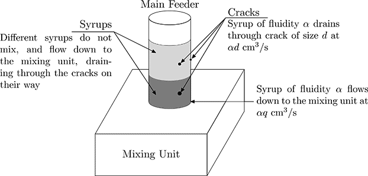

Home Page
F.A.Qs
Statistical Charts
Past Contests
Scheduled Contests
Award Contest
| Online Judge | Problem Set | Authors | Online Contests | User | ||||||
|---|---|---|---|---|---|---|---|---|---|---|
| Web Board Home Page F.A.Qs Statistical Charts | Current Contest Past Contests Scheduled Contests Award Contest | |||||||||
|
Language: Confectionery
Description ACM Inc., the manufacturer of Automatic Confectionery Mixers, often receives complaints for its ACM-07 household devices. The weak place of ACM-07 is the main feeder — the vertical plastic tube which contains syrup before it is injected into the mixing unit. The main feeder gets cracked due to mixer vibrations, and the syrup drains through the cracks. The last complaint was an unusual one. Margaret called ACM Inc. customer support service to express her thanks. She told that her cakes and pastry became incredibly tasty, and she was never able to have the same success without the mixer. The company manager was greatly surprised with this story and decided to send Alex — an ACM-07 constructor — to investigate the case. Margaret is a daughter of a mathematician, so she always cooks according to the same formalized algorithm and uses the same ingredients. There are n various fruit syrups, which are poured into the feeder one after another, from 1 to n. Syrups have different densities and normally don’t mix. When all syrups are in place, Margaret opens the valve and lets the liquid flow to the mixing unit. Alex found that the main feeder of the mixer was broken in several places, and some amount of syrup drains through the cracks, therefore not getting to the mixing unit. He told Margaret about this, and now she believes that the taste is so special because the proportions of syrups has changed due to drains. Fortunately, the syrups don’t mix while running through the feeder, and Alex volunteered to help Margaret to calculate the syrup proportions after passing the feeder tube. Each syrup is characterized by its fluidity. If the syrup with fluidity α is located at the crack of size d in the feeder, each second αd cm3 of syrup drains out of the crack. Similarly, if the syrup of fluidity α is at the bottom of the feeder, each second αq cm3 of syrup flows through the hole at the bottom of the feeder into the mixing unit. Given the positions of the cracks on the feeder, their sizes and the size of the hole at the bottom of the feeder, as well as the initial amount of each syrup, find the amount of each syrup that eventually gets to the mixing unit.  Input The first line of the input file contains n — the number of syrups (1 ≤ n ≤ 10), m — the number of cracks (0 ≤ m ≤ 10), and s — the area of the perpendicular section of the feeder in cm2 (1.0 ≤ s ≤ 100.0). The following n lines describe syrups. Each line contains two real numbers: vi — the initial volume of the syrup in cm3 and αi — the fluidity of the syrup. The syrups are described in order from the one at the bottom of the feeder to the one at the top (1.0 ≤ vi, αi ≤ 100.0). The following m lines describe cracks. Each crack is described with two real numbers: xi and di — the distance from the bottom of the feeder to the crack, and its size, respectively (1.0 ≤ xi ≤ 1000.0, 0.1 ≤ di ≤ 10.0). You can consider the size of cracks be small relative to the size of the feeder, so you can treat them as points. The last line of the input file contains a real number q (0.1 ≤ q ≤ 100.0). Output Print n real numbers — for each syrup print the volume of the syrup that eventually gets to the mixing unit. Print at least four digits after the decimal point. Sample Input 2 3 2.5 5.0 4.0 6.25 2.0 1.0 0.4 3.0 0.3 3.0 0.2 1.5 Sample Output 4.4736842105 4.8444491796 Source Northeastern Europe 2006, Northern Subregion | ||||||||||
[Submit] [Go Back] [Status] [Discuss]
All Rights Reserved 2003-2013 Ying Fuchen,Xu Pengcheng,Xie Di
Any problem, Please Contact Administrator